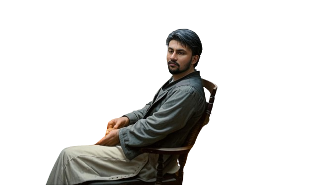

Hi, My name is Nawaz
and I am a Aspiring

Work Experience

Data Science (2022-current)
My data science journey began with curiosity and a passion for extracting insights from data. I
embarked on this path by learning programming, statistics, and machine learning. Over time, I've
tackled real-world challenges, honed my skills, and continually explored the ever-evolving
landscape of data science, driven by the desire to make data-driven decisions that can impact
the world.
Data Analysis (2022-current)
My data analysis journey began with an inquisitive mind and a knack for uncovering meaningful
patterns in data. Starting with basic tools and techniques, I delved into various domains,
refined my skills, and evolved into a proficient data analyst. My journey continues, fueled by a
passion for transforming raw data into valuable insights.
Web Developer (2021-current)
My web development journey started with a simple curiosity for the internet's inner workings.
From basic HTML to complex front-end frameworks and back-end technologies, I've learned to build
dynamic, user-friendly websites. It's been an exciting journey of continuous learning and
creativity, with a focus on delivering seamless online experiences.
C programming (2021-current)
My C programming journey began with a fascination for low-level coding and system-level
interactions. I started with basic syntax, gradually delving into data structures, algorithms,
and memory management. Through debugging, problem-solving, and countless lines of code, I've
cultivated a deep appreciation for the elegance and power of C programming.
Projects
My Face Detection app, built using the OpenCV Python library, revolutionizes image analysis.
Employing advanced computer vision, it swiftly and accurately identifies human faces. This
intuitive application, powered by OpenCV, ensures a seamless and efficient experience in face
detection, setting a new standard for precision in the realm of facial recognition technology.
In this project i performed data cleaning and manipulation and performed exploratory data
analysis (EDA) using pandas, matplotlib and seaborn libraries.
I improved customer experience by identifying potential customers across different states,
occupation, gender and age groups.
Improved sales by identifying most selling products
categories and products, which can help to plan inventory and hence meet the demands.
In my rock-paper-scissors game project, strategic choices unfold as players engage in the
timeless battle of elements. The code elegantly captures the essence of chance and
decision-making, offering a digital arena where users can test their wits. Its simplicity masks
the underlying complexity, providing an enjoyable and immersive gaming experience.
Snake Water Gun Game Project: An immersive blend of strategy and chance, the game pits players
against each other as serpents, waves, or shooters. With unique abilities for each role, the
project promises thrilling gameplay, fostering strategic thinking and unpredictable outcomes in
a dynamic gaming experience."
Certificates
IBM Database and SQL for DataScience
Embark on a transformative Data Science journey with Coursera's "IBM Data Science Professional Certificate." Explore the intricacies of databases and SQL, mastering essential skills to extract, manipulate, and analyze data. Gain insights from industry-leading experts at IBM, unlocking the potential for impactful, data-driven decision-making.Machine learning with Python
Coursera's Machine Learning with Python course equips learners with essential skills in this dynamic field. Taught by industry experts, the curriculum covers Python programming, data manipulation, and machine learning algorithms. Through hands-on projects, participants gain practical experience, ensuring a solid foundation for real-world applications. Ideal for beginners and aspiring data scientists.Skills
Programming Language
C, C++, Python and Java
Database
MySQL
Data Visualisation
Machine learning, DataAnalysis, Numpy, Pandas, Matplotlib and Seaborn
Web development
HTML, CSS and JavaScript